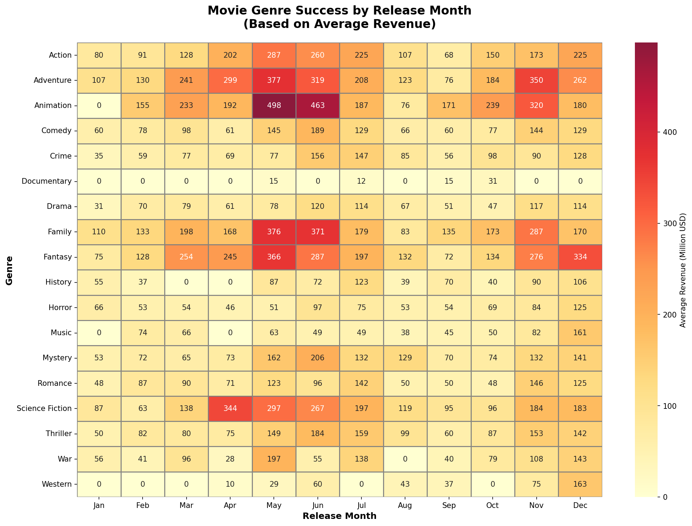

Introduction
Intro goes here.
Analysis goes here.
Data
The TMDB 5000 Movie Dataset contains information about approximately 5,000 movies from The Movie
Database (TMDb). The dataset includes:
- Financial metrics: Budget, revenue, and ROI calculations
- Metadata: Title, genres, release date, runtime, production companies and countries
- Audience metrics: Vote average, vote count, and popularity scores
- Content information: Overview, tagline, keywords, and cast/crew data
After cleaning and preprocessing, what was the result? Insert text here.
Visualizations
ROI vs Budget by Genre
Takeaway: Takeaway based on the chart goes here.
Genre Success by Release Month

Takeaway: Takeaway based on the chart goes here.
Budget vs Average Rating
Takeaway: Takeaway based on the chart goes here.
Top 25 Most Voted Movies
Takeaway: Takeaway based on the chart goes here.
Global Movie Revenue Explorer
Takeaway: Takeaway based on the chart goes here.
Summary & Future Work
Key Findings
- Key finding 1: Key finding 1 goes here.
- Key finding 2: Key finding 2 goes here.
- Key finding 3: Key finding 3 goes here.
- Key finding 4: Key finding 4 goes here.
- Key finding 5: Key finding 5 goes here.
Future Work
- Future work 1 goes here.
- Future work 2 goes here.
- Future work 3 goes here.
- Future work 4 goes here.
- Future work 5 goes here.